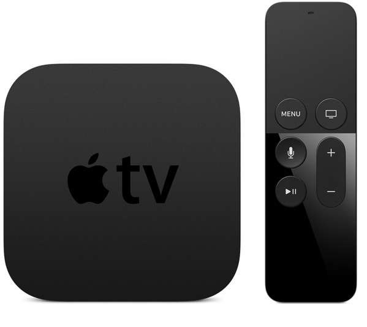

TVML in tvOS
Does it work the 'Hybrid Way'?
Simon Wicki (Twitter @zwacky)
Outline
- Quick Intro to tvOS
- TVML
- Demo & Code
- Conclusion
#ME
Front-end guy at JustWatch.com
Twitter: @zwacky
- currently manage
- Angular Web App
- Ionic Hybrid App (Android, iOS)
Quick Intro to tvOS
Controls

Quick Intro to tvOS
Parallax Icons

Ways of Developing for tvOS
and how they look like
Native
Native
TVML
TVML
TVML
XML Style
Update Available
Get the latest tvOS version
turns into...
more complex templates are possible too...
TVML JS
- DOMParser
- Element
- XMLSerializer
- ...
TVML Styles
- 27 documented styles
- like font-weight, margin, max-height
- lots of tv-* styles like tv-position, tv-rating-style
Limitations
- NO WEBVIEW!
- App size limit (200MB)
- no persistent storage
- use iCloud storage
- anything stored locally can be purged anytime
- Controls / Remote
(little) Demo
Architecture
Server / Client Approach
Code
vanilla API requests
function requestApi(url, method, body, cb) {
var xhr = new XMLHttpRequest();
xhr.responseType = 'json';
xhr.onreadystatechange = function() {
if (xhr.readyState === 4 && xhr.status === 200) {
cb(xhr.response);
}
};
xhr.open(method, url);
xhr.setRequestHeader('Content-Type', 'application/json');
xhr.setRequestHeader("Accept", 'application/json, */*');
xhr.send(body);
}
forEaching template
${this.cache.popular.items.map(function(title) {
return `

${title.title.replace('&', 'and')}
`;
})}
Does it work the 'Hybrid Way'?
No.